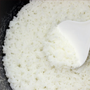
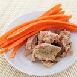
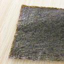
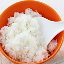
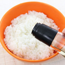
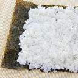
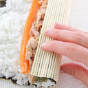
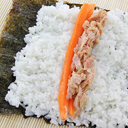

-  Introduction and technics overview 01:15
-  Choosing the freshest ingredients 03:18
-  Cooking your rice 05:24
-  Chop and prepare your vegetables and fish 08:00
-  Put the nori on the bamboo mat shiny side down 03:30
-  Remove the rice from the rice cooker and put it into a bowl 01:15
-  Add seasoned rice vinegar to moisten the rice 06:10
-  Wet your hands, then spread the rice on the nori leaving about 07:22
-
 With your thumb make a line in the middle of rice
14:07
With your thumb make a line in the middle of rice
14:07
-
Fill in the gap with your chosen ingredients
11:05
-
Roll the sushi with the bamboo mat
01:02
-
Wet your knife then cut the roll into the desired size
09:05